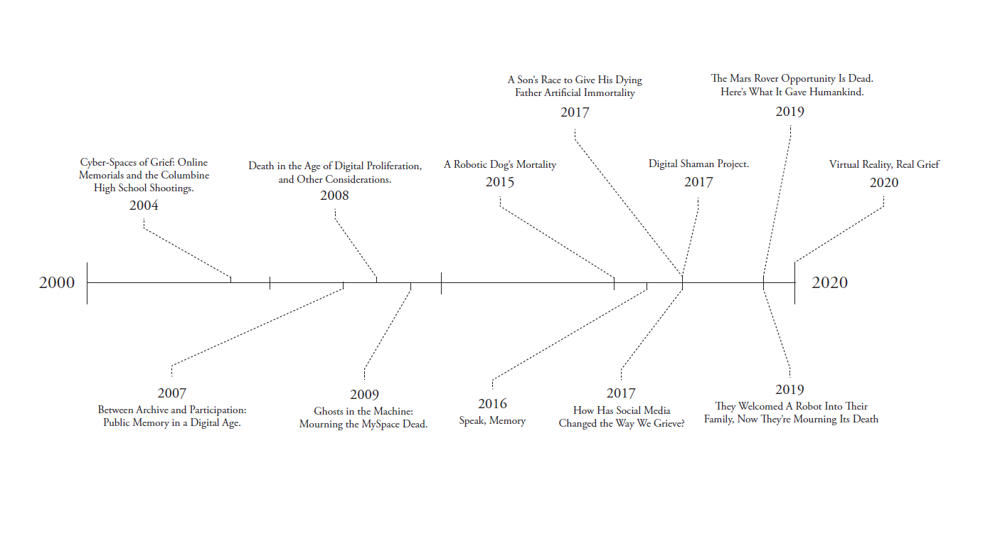

Methods
Word Definition
Before going deeper into the implication of the phrase digital grief, I think it’s important to see the meaning and origin of individual words.
Understanding where words come from and how it became to be could help us understand the multiple implications, track their evolution, and compare what they used to signify and what they signify today.
|
Digital | adjective
|
Grief | noun
|
Word definitions from the website of Merriam-Webster Dictionary, accessed in December 2020.
Word Origin
|
[English] digital “using numerical digits”
|
[English] grief “hardship, suffering, pain”
|
Word origins from the website of Online Etymology Dictionary, accessed in December 2020.
Mind Map
mind mapping is a visualization of expansion of ideas. I find this process helpful for myself as my mind tend to run a mile a minute and lost track of how I get to the end result. Documenting thought process this way could potentially open up new possibilities, methods, or subtopics that are often oversighted.
The mind map started with the word “digital” and “grief” separately. Each word expanded into related words, topics, and opposites. At the end, a lot of common topics between the two words were found. This mind map could go on and on, but I decided to put a stop as I’ve found enough commonalities between the two words for now.

Secondary Research: Grouping
There are two different perspectives on digital grief in this study; digital technology and spaces that assist humans grieve, and how us humans grieve digital technology and spaces. The two approaches are then further expanded by grouping the study materials into four subcategories: social media and grief; digital memorials and spaces for grieving; grief-assisting technology; and grieving robots.
This categorization was made to make comparisons between different reading materials that share common catalysts. Each categories are not mutually exclusive, in fact, they tend to overlap. For example, as social media becomes a common avenue for grief, many turn the social media profiles of the dead themselves into online memorials. This instance would fall under both the first, second, and, by extention, the third category too.
The following pages are the bibliography for this study and how they are grouped into the subcategories mentioned before.
The bibliography consists of reading materials I have stumbled upon before starting this project, the ones that raised my questions around digital grief, and some that I came across when I was putting together the project proposal.
✿ Canepari, Zackary. “A Robotic Dog’s Mortality” The New York Times. June 17, 2015. https://www.nytimes.com/2015/06/18/technology/robotica-sony-aibo-robotic-dog-mortality.html.
✿ Carman, Ashley. “They Welcomed A Robot Into Their Family, Now They’re Mourning Its Death”. The Verge. June 19, 2019. https://www.theverge.com/2019/6/19/18682780/jibo-death-server-update-social-robot-mourning.
☻ ♣ Dobler, Robert. “Ghosts in the Machine: Mourning the MySpace Dead.” Folklore and the Internet: Vernacular Expression in a Digital World, edited by Trevor J. Blank, University Press of Colorado, 2009, pp. 175–193. JSTOR, www.jstor.org/stable/j.ctt4cgrx5.11.
✿ Greshko, Michael. “The Mars Rover Opportunity Is Dead. Here's What It Gave Humankind.” National Geographic. February 13, 2019. https://www.nationalgeographic.com/science/2019/02/nasa-mars-rover-opportunity-dead-what-it-gave-humankind/.
☻ ♦ Haskins, Ekaterina. “Between Archive and Participation: Public Memory in a Digital Age.” Rhetoric Society Quarterly, vol. 37, no. 4, 2007, pp. 401–422. JSTOR, www.jstor.org/stable/40232504.
☻ ♥ Ichihara, Etsuko. “Digital Shaman Project.” PRIX ARS, 2017, prix2018.aec.at/prixwinner/27693/.
☻ ♥ Kim, Violet. “Virtual Reality, Real Grief” SLATE. May 27, 2020. https://slate.com/technology/2020/05/meeting-you-virtual-reality-documentary-mbc.html.
☻ ♣ Lapper, Ellen. “How Has Social Media Changed the Way We Grieve?” Digital Environments: Ethnographic Perspectives Across Global Online and Offline Spaces, edited by Urte Undine Frömming et al., Transcript Verlag, Bielefeld, 2017, pp. 127–142. JSTOR, www.jstor.org/stable/j.ctv1xxrxw.
☻ ♥ Newton, Casey. “Speak, Memory”. The Verge. October 6, 2016. https://www.theverge.com/a/luka-artificial-intelligence-memorial-roman-mazurenko-bot.
☻ ♦ Socolovsky, Maya. “Cyber-Spaces of Grief: Online Memorials and the Columbine High School Shootings.” JAC, vol. 24, no. 2, 2004, pp. 467–489. JSTOR, www.jstor.org/stable/20866634.
☻ ♣ Sorrentino, Christopher. “Death in the Age of Digital Proliferation, and Other Considerations.” Conjunctions, no. 51, 2008, pp. 202–212. JSTOR, www.jstor.org/stable/24517544.
☻ ♥ Vlahos, James. “A Son’s Race to Give His Dying Father Artificial Immortality”. WIRED. July 18, 2017. https://www.wired.com/story/a-sons-race-to-give-his-dying-father-artificial-immortality/.
Legend:
✿ Grieving the digital
☻ Assisting grief
∟ ♣ Social media
∟ ♦ Online memorial
∟ ♥ Grief technology
- Digital Grief
- Digital technology and spaces that assist humans grieve
- Social media and grief
- Digital memorials and spaces for grieving
- Grief-assisting technology
- How humans grieve digital technology and spaces
- Grieving robots
After finding similarities and grouping the materials together, I built the structure on the left. Using this structure as guidance, I will be analyzing and make correlations between materials within the context of their subcategories, which later can be correlated to the other subcategories, building a concise network and conclusion.
Digital Technology And Spaces That Assist Humans Grieve
Social Media And Grief
- How Has Social Media Changed the Way We Grieve? by Ellen Lapper
- Ghosts in the Machine: Mourning the MySpace Dead by Robert Dobler
- Death in the Age of Digital Proliferation, and Other Considerations by Christopher Sorrentino
Digital Memorials And Spaces for Grieving
- Between Archive and Participation: Public Memory in a Digital Age by Ekaterina Haskins
- Cyber-Spaces of Grief: Online Memorials and the Columbine High School Shootings by Maya Socolovsky
Grief-Assisting Technology
- Digital Shaman Project by Etsuko Ichihara
- Virtual Reality, Real Grief by Kim Violet
- Speak, Memory by Casey Newton
- A Son’s Race to Give His Dying Father Artificial Immortality by James Vlahos
How Humans Grieve Digital Technology And Spaces
Grieving Robots
- A Robotic Dog’s Mortality by Zackary Canepari
- They Welcomed A Robot Into Their Family, Now They’re Mourning Its Death by Ashley Carman
- The Mars Rover Opportunity Is Dead. Here’s What It Gave Humankind by Michael Greshko
Secondary Research: Timeline Comparison
Understanding the timeline and when each material was published is important to the topic. We live in an everchanging environment, with relatively quick access to information through technology. Social media in the 2000s existed differently than the way social media exists today. It’s pertinent to the research to take a step back and look at the research materials within the context of the time and place it was written in.
For that reason, a visual of this information would help the readers understand how each materials relate to its time and each other. This perspective helps me understand where outdated perspectives and biases might have come from.

Secondary Research: Reading Response
Research is not a linear process. There is a lot of back and forth, expanding and narrowing ideas, and endless questioning. A lot of the methods listed prior this page were formed after going through the study materials and receiving feedback from my instructor.
The reading response to my study material will be the main focus in this document, where I will be critically analysing each material through multiple lenses and pulling up relevant examples. I will provide relevant pictures, diagrams, and direct quotes from the study material itself or other works that are cited in it.
I wish to present these reading responses raw and closer to my initial responses. With minimal editing, some thoughts might not be as polished as readers expect them to be, with several tangents off the main topics. After all, this document was meant to serve as a documentation and prototype for my research that I wish to continue in the future.